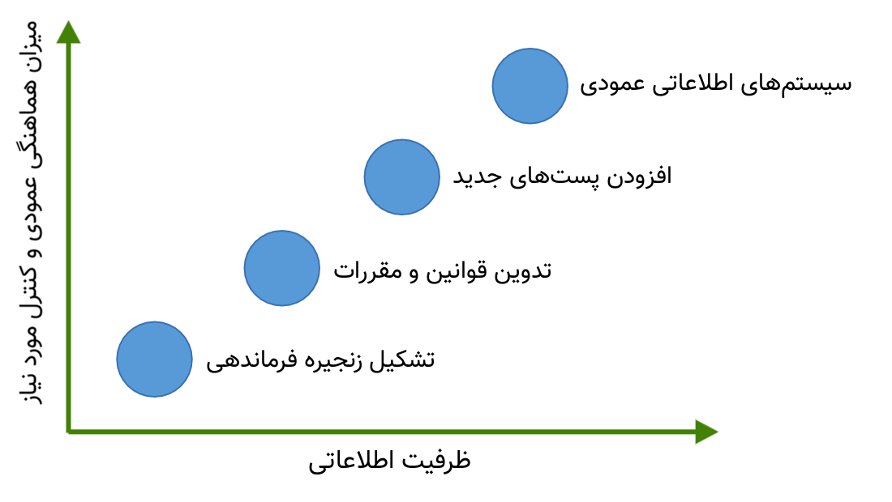
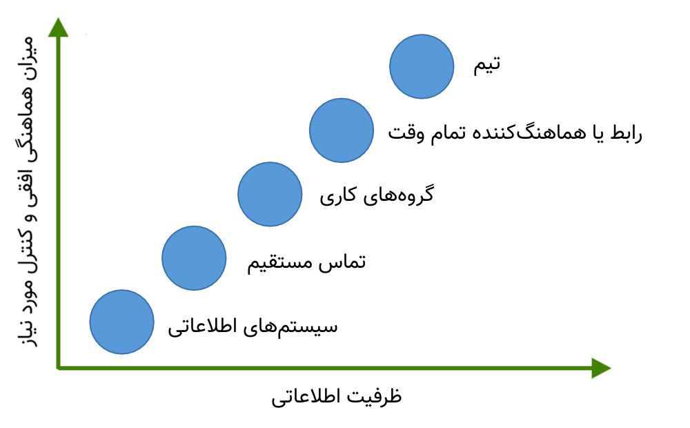
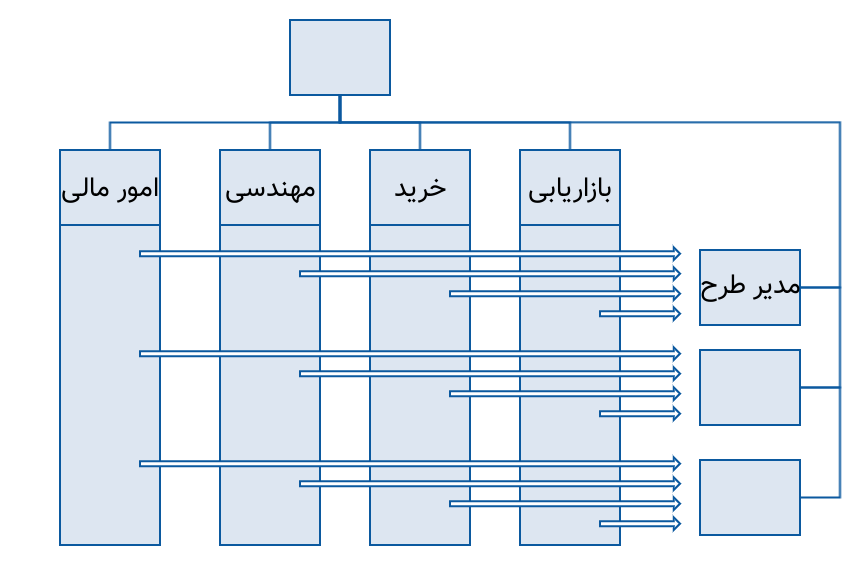
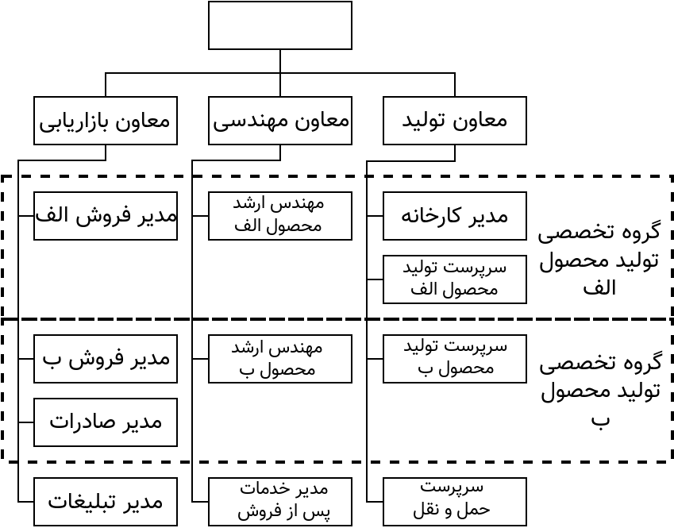
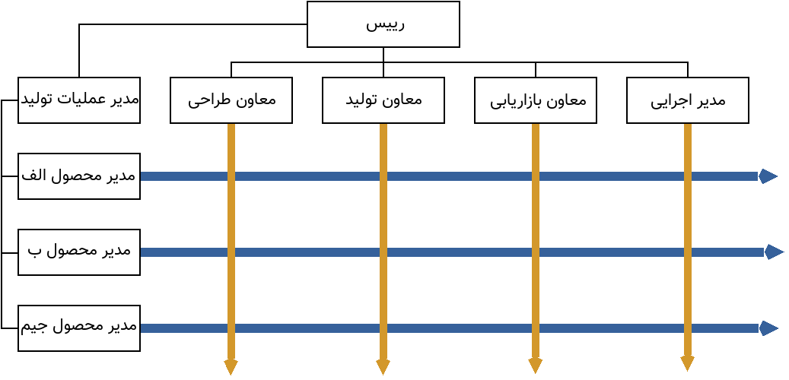

تئوری و طراحی سازمان
فصل ششم
مبانی ساختار سازمان
اندازه
تکنولوژی
محیط
استراتژی
متغیرهای محتوایی و فرآیندهایانسانی سازمان که بر ساختار اثر میگذارند
ساختار نشاندهندهی استراتژی سازمان است
بین ساختار و استراتژی رقابتی، در سازمان رابطه مستقیم وجود دارد
یک تغییر کوچک در استراتژی بازار یا محصول به تغییر ساختار منجر خواهد شد
پس از تعیین استراتژی، رهبران ساختار سازمان را طرح ریزی یا طراحی مجدد میکنند با این هدف که فعالیتهای سازمان را هماهنگ کنند، به گونهای که به بهترین شکل ممکن به مزیتهای مورد نظر دست یابند
استراتژی اغلب سیر تکامل دارد و با گسترش بازارهای جدید پیچیدهتر میشود و ساختار نیز بر این اساس باید تغییر نماید.
ساختار سازمانی در نمودار سازمانی نمایان میشود
نمودار سازمانی یک نماد قابل رویت است از کل فرآیندها و فعالیتهای سازمان
سه رکن اصلی ساختار سازمانی
- تعیین کننده روابط رسمی گزارشکری در سازمان است و سطوح سلسله مراتب و حیطه کنترل مدیران را مشخص میکند
- تعیین کنندهی افرادی است که به صورت گروهی در دوایر کار میکنند و گروهبندی یا تقسیمبندی دوایری است که در کل سازمان وجود دارند
- در برگیرنده طرح سیستمهایی میشود که به وسیلهی آنها فعالیتهای همهی دوایر هماهنگ و یکپارچه میگردد، و در نتیجه سیستم ارتباط موثر در سازمان تضمین خواهد شد
چارچوب
تعامل بین کارکنان
شیوه پردازش اطلاعات در ساحتار سازمانی
ساختار سازمان باید به گونهای طراحی شود که نیازهای اطلاعاتی سازمان را به صورت مناسب پاسخگو باشد، در غیر اینصورت کارکنان باید زمان زیادی را صرف پردازش اطلاعاتی نمایند که با توجه به نوع کارشان اهمیت زیادی ندارد و در نتیجه اثربخشی سازمان کاهش مییابد
شیوه پردازش اطلاعات در ساختار سازمانی
ارتباط(Linkage)
میزان هماهنگی یا رابطهای که بین ارکان سازمان وجود دارد
ارتباطات عمودی(Vertical Linkage)
هماهنگی بین مقامات بالا و پایین سازمان
ارتباطات افقی(Horizontal Linkage)
تماس و هماهنگیهایی که در سطح افقی بین دوایر سازمان وجود دارد
ارتباطهای اطلاعاتی در سطح عمودی سازمان
کارکنان سطوح پایین سازمان باید کارهایی انجام دهند که با هدفهای سطوح بالای سازمان سازگار باشد و مدیران اجرایی ردهبالای سازمان باید از کارها و فعالیتهای افراد سطح پایینتر آگاه شوند.

ساختارهای ایجاد ارتباط عمودی
ارتباطهای اطلاعاتی در سطح افقی سازمان
سازمان از مجرای به وجود آوردن ارتباطات در سطوح افقی موانع بین دوایر را از بین میبرد و فرصتهایی به وجود میآورند تا کارکنان در راه تامین اهداف سازمان تلاش هماهنگ نمایند
از جمله عواملی که باعث افزایش نیاز به هماهنگی در سطح افقی میشوند
۱- نامطمینتر شدن محیط
۲- وجود تکنولوژی پیچیده
۳- وابستگی شدید بین دوایر سازمان
۴- زمانی که سازمان بر نوآوری، خلاقیت و انعطاف پذیری تاکید میکند

ساختارهای ایجاد ارتباطات افقی


طراحی ساختار سازمانی
۳نکتهای که در طراحی ساختار سازمانی باید رعایت شود
۱- تعیین کارهایی که باید انجام شود
۲- زنجیرهی فرماندهی
۳- گروهبندی دوایر
موجودیت دوایر سازمانی برای این است که کارهایی که از نظر سازمان اهمیت دارند انجام شوند
سازمان از طریق ایجاد زنجیره فرماندهی همه افراد را به یکدیگر وصل میکند و مشخص میشود که افراد باید گزارش کار خود را به چه افرادی بدهند(شیوه گزارشگری)
از طریق گروهبندی، کارکنان سازمان میتوانند زیر نظر سرپرست مشترک کار کنند، از منابع به صورت مشترک استفاده کنند، در مورد عملکردها مسئولیت مشترک بپذیرند، یکدیگر را معرف خود بدانند و در کارها تشریک مساعی کنند
گروهبندی بر حسب نوع فعالیت
- بر حسب نوع وظیف
- بر حسب فرآیندکارها
- بر حسب میزان معلومات، سطح مهارت و رشتهی علمی
گروهبندی بر حسب نوع محصول
- بر حسب نوع محصول
- بر حسب نوع خدمت
- بر حسب طرحهای اجرایی
- بر حسب مرکز سود
گروهبندی بر حسب مصرفکننده
- بر حسب منطقه جغرافیایی
- بر حسب مشتری و مصرفکننده
- بر حسب بخشهایی از بازار
سازمانهای دو ساختاری
- ماتریس
- پیوندی
ساختار مبتنی بر نوع وظیفه
محتوا
ساختار: وظیفهای
محیط: باثبات،عدم اطمینان اندک
تکنولوژی: عادی و یکنواخت، وابستگی بین سازمانها اندک
اندازه یا بزرگی: کوچک یا متوسط
هدفها: درون سازمانی، کیفیت بالای فنی
سیستمهای درون سازمانی
هدفهای عملی: تاکید بر هدفهای تخصصی
برنامهریزی و بودجهبندی: مبتنی بر هزینه
اختیارات رسمی: مدیر واحد
نقاط قوت
- در درون دایره صرفهجویی به مقیاس میشود
- کارکنان میتوانند مهارتهای گوناگون و در سطح بالا فراگیرند
- سازمان میتواند هدفهای تخصصی خود را تامین کند
- برای سازمانهای کوچک و متوسط بسیار مناسب است
- اگر سازمان یک نوع محصول تولید کند، این ساختار بسیار مناسب است
نقاط ضعف
- نسبت به تغییرات محیط نمی تواند از خود واکنش نشان دهد
- احتمالاً موجب خواهد شد که مقام ارشد مجبور شود همه تصمیمها را بگیرد که بار تصمیم گیری سنگین خواهد شد
- هماهنگی در سطح افقی سازمان(بین دوایر) ضعیف است
- چندان موجب نوآوری وخلاقیت نخواهد شد
- دیدگاههای اعضای سازمان نسبت به هدفهای سازمان محدود می شود
ساختار مبتنی بر نوع محصول
محتوا
ساختار: محصول
محیط: عدم اطمینان متوسط تا زیاد، در حال تغییر
تکنولوژی: پیچیده، دوایر سازمانی به هم وابستهاند
اندازه یا بزرگی: بزرگ
هدفها: رضایت مشتری، سازش با محیط، اثر بخشی در خارج از سازمان
سیستمهای درون سازمانی
هدفهای عملی: تأکید بر نوع محصول
برنامهریزی و بودجهبندی: مبتنی بر مرکز سود(هزینه و درآمد)
اختیارات رسمی: مدیران تولید
نقاط قوت
- مناسب محیطی است که سریع تغییر می کند و بیثبات است
- از آنجا که نوع محصول و محل مراجعه مشخص است، شرکت جهت جلب رضایت مشتری حرکت میکند
- دوایر سازمانی، در سطح بالایی با یکدیگر هماهنگاند
- هر واحدمیتواند با توجه به خواست مشتریان و منطقه فعالیتش محصولاتی را تولید و
عرضه کند
- تصمیم گیری بصورت غیر متمرکز است
- مناسب شرکتهایی است که بسیار بزرگ هستند و انواع مختلف محصول تولید می نمایند
نقاط ضعف
- دوایر مختلف نمی توانند صرفه جویی به مقیاس انجام دهند
- خطوط مختلف تولید نمی توانند هماهنگی چندان زیادی با هم داشته باشند
- در این شرکتها مسألۀ صلاحیت و شایستگی زیاد با تخصص فنی منتفی است
- مسأله رعایت استاندارد،انسجام و یکپارچگی،از نظر خطوط تولید،بسیار مشکل است
ساختار پیوندی
محتوا
ساختار: پیوندی
محیط: عدم اطمینان متوسط تا زیاد، تقاضای مشتریان مرتب تغییر میکند
تکنولوژی: عادی یا پیشرفته،مقداری وابستگی بین دوایر وجود دارد
اندازه یا بزرگی: بزرگ
هدفها: اثربخش بودن سازمان در محیط خارجی،انعطاف پذیری و سازش با محیط و کارآیی دوایر سازمانی
سیستمهای درون سازمانی
هدفهای عملی: تأکید بر نوع خط تولید، نوعی تأکید بر دوایر سازمانی
برنامهریزی و بودجهبندی: وجود مرکز سود برای بخشهای تولیدی، وجود مراکز هزینهای برای دفاتر مرکزی
اختیارات رسمی: مدیران تولید، مسئولیت ایجاد هماهنگی بر عهدخ مدیران دوایر سازمانی است
نقاط قوت
- سازمان میتواند خود را با تغییرات محیط وفق دهد، بخشهای تولید را هماهنگ نماید و کارآیی دوایر را بالا ببرد
- سازمان میتواند هدفهای کل شرکت و بخشها یا واحدهای تولیدی را هماهنگ نماید
- سازمان میتواند بین خطوط تولید و در درون هر یک هماهنگی ایجاد کند
نقاط ضعف
- امکان زیادی هست که سازمان با نیروی سربار(کارکنان اداری) روبرو شود
- امکان زیادی هست که بین دوایر و واحدهای تولیدی تعارض و تضاد به وجود آید
ساختار ماتریسی

نقشهای کلیدی در ساختار ماتریسی
:
رهبران ارشد
/
رؤسای ماتریس
/
کارکنانی که باید گزارش کار خود را به دو رئیس بدهند
شرایط مورد نیاز ساختار ماتریسی
- دوایر تولید بر سازمان فشار آورند که در منابع کمیاب آن سهمی داشته باشند
- سازمان بوسیلۀ محیط تحت فشار قرار گیرد تا دو یا چند نوع محصول ضد و نقیض ارائه کند(از یک طرف توجه به کیفیت و از طرف دیگر،نوآوری و عرضۀ محصولات جدید)
- محیط سازمان،پیچیده و نامطمئن است
محتوا
ساختار: ماتریسی
محیط: عدم اطمینان زیاد
تکنولوژی: پیچیده، واحدها به یکدیگر وابسته
اندازه یا بزرگی: متوسط، تنها چند خط تولید
هدفها: متضاد، نوآوری در محصول و تخصص فنی
سیستمهای درون سازمانی
هدفهای عملی: برقرار کردن تعادل بین قدرتهای دوایر سازمانی و مجریان برنامه
برنامهریزی و بودجهبندی: سیستمهای ضد و نقیض مربوط به مدیران برنامه ها و دوایر سازمانی
اختیارات رسمی: مشترک بین رؤسای دوایر سازمانی و مجریان برنامه
نقاط قوت
- سازمان موفق میکوشد بین تقاضای دوگانه هماهنگی ایجاد کند
- سازمان برای تامین نیازهای ضد و نقیض محیط میکوشد تا هماهنگی لازم ایجاد کند
- در توزیع منابع انسانی، سازمان انعطاف پذیر است و واحدهای سازمانی بصورت مشترک از این منابع استفاده می کنند
- سازمان برای کارکنان دوایر و آنها که در خط تولید هستند،موقعیتها و فرصتهای کافی بوجود میآورد تا آنها بر مهارتهای خود بیفزایند
- برای سازمانهای متوسط، که محصولات گوناگون تولید و عرضه میکنند، مناسب است
نقاط ضعف
- اعضای سازمان باید زیر نظر کسانی که قدرتهای متضاد دارند کار کنند، که ممکن است باعث سردرگمی و استیصال شود
- پرسنل باید از نظر ایجاد ارتباط با دیگران از مهارتهای بالایی برخوردار بوده و آموزشهای زیادی دیده باشند
- نیاز به جلسات زیادی برای رفع تعارضها میباشد، از این رو مستلزم صرف وقت بسیار زیادی است
- اگر اعضا نتوانند سیستم را درک کرده و موفق به ایجاد ارتباط افقی به جای ارتباطات عمودی مرسوم نشوند، سیستم شکست خواهد خورد
- سازمان از طرف محیط تحت فشار است تا بین قدرتهای موجود تعادل و توازن برقرار کند